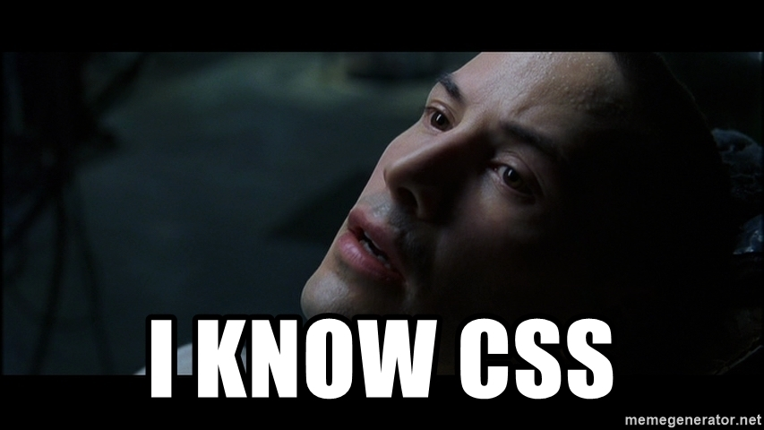

Design system
General design
This is my first project in the Udacity front-end web developer course. This project is all about HTML (HyperText Markup Language) and CSS (Cascading Style Sheets). We were tasked with creating a personal blog website, and I have chosen the topic of "the Metaverse" for my blog.
From a design point of view, I based my blog website's design loosely on Google's Material Design 3 design system. Both the top app bar and the navigation drawer are based on Google's designs for these components.
From a development point of view, the entire website was developed using the Visual Studio Code code editor. The website's responsive design was tested using Google Chrome DevTools' Device Mode. This should help to ensure that the site displays correctly on various devices of different sizes, including mobile phones, tablets, and computer monitors. Finally, I tried to adhere to the Udacity Frontend Nanodegree Style Guide when writing my HTML and CSS code.
Color palette and cards
For my color palette, I again turned to Google's Material Design 3. I used their Dynamic Material Theme Builder along with a background image from Shutterstock (the cool virtual reality girl at the top of this page) to obtain a primary palette color. This primary color was #454dd2. A nice "blue-purplish" color (the color of all the links on this page).
I then used my #454dd2 primary color on Google's Custom Material Theme Builder, which provided me with an entire color palette to use for my blog website. There is an "EXPORT" button in the top right-hand corner of the Material Theme Builder, which allows you to export your color palette to a CSS file. And that is where I obtained the colors I used for the light and dark themes for my website (see the theme-light.css and theme-dark.css files for all colors generated by Google's Material Theme Builder). I also used the example Plant Care app in the Material Theme Builder for inspiration for the blog post cards on my home page.
Below are screenshots of my light and dark themes from Google's Material Theme Builder, as well as a screenshot of the example Plant Care app:


Light and dark mode
Using the light and dark themes above, I was able to add a button to the top app bar of all my pages to dynamically swap between light and dark mode. I'm particularly proud of this feature. I will aim to improve on this feature once I've learned JavaScript and how to use cookies. That way, I will be able to persist the user's light/dark mode choice across the various pages of my website.
Give this feature a bash by scrolling to the top of this page. Then click the moon icon in the top right-hand corner of the page to switch to dark mode. You can then click the sun icon to switch back to light mode.
Typography
I used Google Fonts for all my font needs. Roboto was used for all HTML body and element text, while Orbitron was used for all titles.
Icons and images
I then used Google Fonts' Icons for all my icon needs. I could have used Google's icon font directly by linking to their CSS style sheet in the <head> section of my HTML pages (similar to what I did to link to the Roboto and Orbitron Google fonts). However, using their icon font directly would limit me to only using Google's icons in the future. So, I rather downloaded the icons I needed and coloured them using the CSS filter property.
More details on how these icons (and most other images on this site) were filled with custom colors can be found at the following links:- Stackoverflow Question 22252472 - How to change the color of a svg element using CSS (see the top "To change any SVGs color" answer by Manish Menaria).
- Codepen CSS filter generator (use the "Target color" field to create a CSS filter using a hex color value).
Browser compatibility
This website was tested and should work fine with the following web browsers:- Chrome
- Brave Browser
- Firefox
- Safari
- Microsoft Edge
- Chrome Android
- Brave Browser Android
Final thoughts
I thoroughly enjoyed my first project in the Udacity front-end web developer course. There was a lot of "feature creep" in my designs, and I will need to keep things simple in the coming projects to not overrun on time. But despite taking a long time to develop my blog website and all its features, I have truly learned a lot in doing so.
I feel a bit like Neo in The Matrix. But instead of knowing "Kung Fu"...
